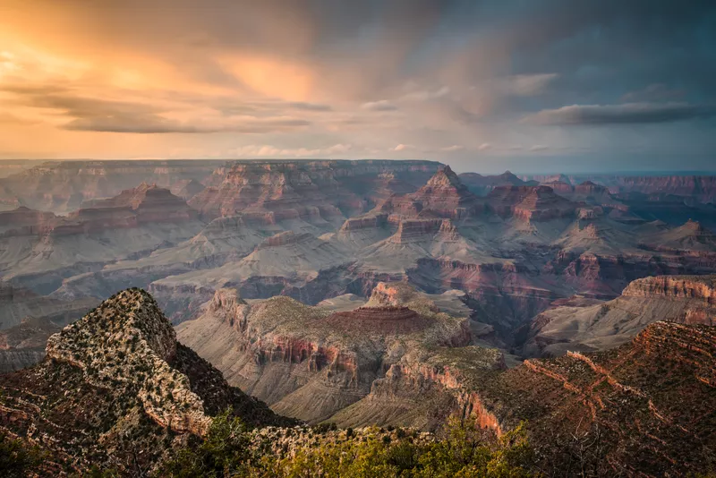

American icons like the Statue of Liberty, the Empire State Building, and Times Square are on every first-time visitor's list, but they are just a few of the attractions to see in New York City, America's most populous and most popular city. Also known as the "Big Apple," New York City is a favorite destination for both domestic and international visitors.
Don't miss a leisurely walk on the High Line, an old-railroad-track-turned-park that features greenery, artwork, and beautiful skyline views. Broadway and the Theater District is the place to go to see the latest plays and musicals, and if you're an art lover, New York has an embarrassment of riches: the Metropolitan Museum of Art, the Museum of Modern Art, the Guggenheim Museum, the Whitney Museum of American Art, and the Frick Collection.
Or go shopping on Fifth Avenue, check out Washington Square and Greenwich Village and Rockefeller Center, take a walk through Central Park, and get awed by Grand Central Terminal. If you're staying for more than a few days, dig deeper into NYC's architecture or make a trip to Brooklyn.
2. Los Angeles
The lure of Hollywood and its celebrities and the mild breezes from the Pacific Ocean keep Los Angeles on the top of the list of U.S. tourist destinations. Search for top-rated hotels on TripAdvisor near LA's famous beaches like Malibu or Santa Monica for a luxurious stay. Go shopping on Rodeo Drive, tour Beverly Hills, and walk along the boardwalk in LA's most famous beachfront neighborhood, Venice Beach.
3. Chicago
Chicago has long been called the "Second City," coming in second to New York City in both size and population. A beacon in the Midwest, Chicago is actually third in population these days, but it has a skyline, restaurants, shopping, museums, and activities that easily rival NYC and LA. If it's baseball season, don't miss seeing a Cubs game at famous Wrigley Field. Check out the Magnificent Mile, where you'll find every upscale shop imaginable and fantastic restaurants. Chicago is home to some of the nation's most important buildings, and you can see them all on a guided architecture tour on land or from a boat on Lake Michigan. The Art Institute of Chicago is one of the top art museums in the country, and Millennium Park is Chicago's newest attraction.
4. Washington
Washington, the capital of the United States, has miles of museums and monuments—almost all of which are free. That's just one reason why it is one of the most visited cities in the country, especially for families and school groups. It's the perfect place to learn about U.S. history at places like Mount Vernon, George Washington's plantation; Ford's Theater, where Abraham Lincoln was shot; the White House; the Capitol; Georgetown; and Alexandria, along with museums like the Smithsonian, the National Museum of American History, and the National Museum of African-American History and Culture, and the National Museum of the American Indian. You can overdose on museums if you add the United States Holocaust Museum, the Newseum, the National Air and Space Museum, the National Portrait Gallery, the Hirshhorn Museum, and the National Gallery of Art.
The famous cherry blossoms are typically in full bloom late March to early April along the Tidal Basin, where you can also see the Jefferson Memorial and memorials to Franklin D. Roosevelt and the Rev. Dr. Martin Luther King Jr. Don't miss the Washington Monument, the Lincoln Memorial, and the World War II, Korea, and Vietnam Veterans memorials on the National Mall.
5. Las Vegas
Most people go to Las Vegas to try their luck at its famous casinos. But Las Vegas also has blockbuster shows, world-class shopping, and top-notch restaurants, all of which make this city a true desert oasis and a top travel destination. Take a tour of the MGM Grand, try your luck at the Planet Hollywood Hotel and Casino, or walk through the Neon Museum, which showcases iconic Las Vegas signs. And of course, what happens in Vegas stays in Vegas.
6. San Francisco
Symbolized by the red rafters of the Golden Gate Bridge, this legendary city on San Francisco Bay is known for its neighborhoods, like Chinatown and the hippie-turned-haute enclave of Haight-Ashbury. While San Francisco is an ideal city for nature lovers as well as the jet set, it is also a great jumping-off point for trips to the wine country of Napa Valley and Sonoma County or to the colossal tech campuses of Silicon Valley. Check out the Bay Area's top hotel deals on TripAdvisor before you go and make San Francisco your base to discover Northern California.
7. New Orleans
New Orleans is all about festivals, French roots, and a "laissez-faire" attitude, making it a distinctly different—and popular—destination for both American and international travelers. From Mardi Gras, New Orleans' biggest party, to Jazz Fest, one of the world's most respected gatherings of jazz musicians, there are plenty of ways to "let the good times roll" in the Big Easy. For the most authentic experience, stay in the French Quarter, where you'll be close to legendary restaurants and legendary streets, like Bourbon. And it's just a short drive from Frenchman Street, where you can hear the live, jazz music New Orleans is famous for.
8. Asheville, North Carolina
Asheville sits right on the Blue Ridge Parkway, with its spectacular views across the southern Appalachians, and the Appalachian Trail, which runs right down Main Street. Its proximity to the Great Smoky Mountains makes it a jumping-off point for hiking or just jaw-dropping drives through the mountains. Rent a convertible for a once-in-a-lifetime experience. In town, check out the Biltmore, the largest privately-owned estate home in America, built by Goerge W. Vanderbilt in the Gilded Age. It makes for jaw-dropping of a different sort. Spend evenings in downtown Asheville, which is bursting with music, art, and restaurants worthy of serious foodies.
9. Hawaii
Say "aloha" to Hawaii, a top U.S. destination that's a quintessential island paradise. From the natural beauty of its beaches and volcanoes to its rich Pacific culture, Hawaii is the perfect destination if you're looking to really get away from it all. It's definitely a relaxing oasis with perfect weather no matter when you decide to go; average highs range from 79 F in the winter to 84 in high summer, with average lows of 68 in the winter and 75 in the summer. Go hiking on the island of Kauai, see humpback whales in Maui, or play with fire at Hawaii Volcanoes National Park.
10. Sedona and the Grand Canyon

An incredible geological wonder stretching over 250 miles, the Grand Canyon is a deep ravine carved out by the Colorado River over thousands of years. Located in the state of Arizona, the Grand Canyon is a top destination to visit in the Southwest and one of the most popular of U.S. National Parks. Take a drive of about two hours south of the Grand Canyon to Sedona, which is surrounded by stone formations of many colors that change with the light. USA Weekend called it one of the most beautiful places in America. Amid this spectacular landscape, you'll find great eating, luxurious lodging, and loads of art galleries and shops.
11. Florida
Miles of beautiful beaches, family-friendly attractions like Walt Disney World, and the Latino culture and Art Deco style of Miami make Florida a top-of-the-list travel destination. You can soak up the sun on beaches that line the Emerald Coast in the Florida Panhandle, the western Gulf Coast, or the Atlantic; enjoy the rides in Orlando; or have a blast in Miami's South Beach culture. Check out Tampa and St. Petersburg or explore the Everglades. Mostly, Florida is all about getting away and basking in its famous sunshine, which really is a huge draw in the wintertime for Americans in most of the rest of the country.
12. Big Sur
The drive down the coast of California on California Highway 1, aka the Pacific Coast Highway, is legendary. The road through Big Sur and the Central Coast, covering about 163 miles from Carmel to San Simeon, is a visual feast of winding turns and cliffs with the waves of the blue Pacific as a backdrop. (It takes about three hours to drive.) It's been memorialized in song, film, and books, and it's just simply one of the most unforgettable places in the United States. Check out the Carmel-Monterey area on the north end and visit Hearst Castle in San Simeon at the end of the drive.